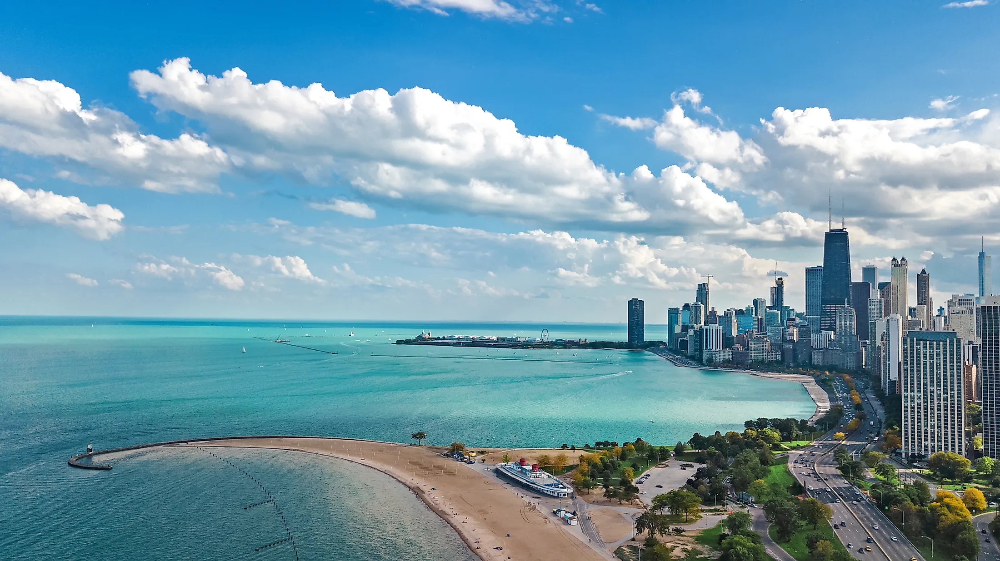

Lake Michigan is one of the five Great Lakes of North America. It is the second-largest of the Great Lakes by volume (1,180 cu mi (4,900 km3)) and the third-largest by surface area (22,404 sq mi (58,030 km2)), after Lake Superior and Lake Huron. To the east, its basin is conjoined with that of Lake Huron through the 3+1⁄2-mile (5.6-kilometer) wide, 295-foot (90-meter; 49-fathom) deep Straits of Mackinac, giving it the same surface elevation as its easterly counterpart; the two are geologically a single lake.
Lake Michigan is the only one of the five Great Lakes located fully in the United States; the other four are shared between the United States and Canada. Lake Michigan is the world's largest lake by area located fully in one country.It is shared, from west to east, by the U.S. states of Wisconsin, Illinois, Indiana, and Michigan. Ports along its shores include Chicago in Illinois, Gary in Indiana, Milwaukee and Green Bay in Wisconsin, and Muskegon in Michigan. In the north the lake is flanked by long bays, including Green Bay in the northwest, and Grand Traverse and Little Traverse bays in the northeast. The word "Michigan" is believed to come from the Ojibwe word(michi-gami or mishigami) meaning "great water".
